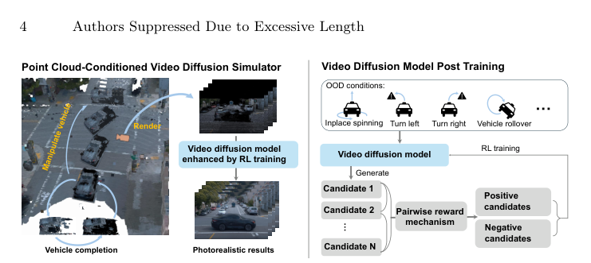
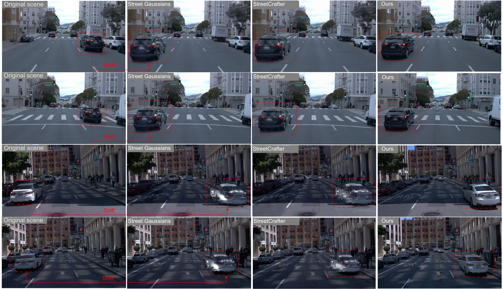
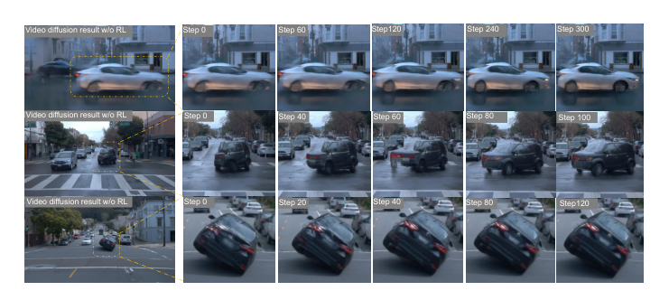
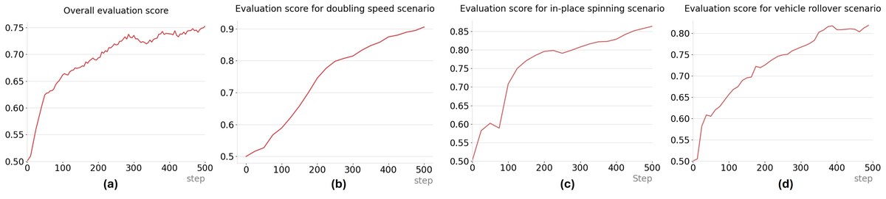

ReinDriveGen：分布式驾驶场景生成的强化后训练
简单摘要
逼真的驾驶场景仿真对自动驾驶系统开发与验证不可或缺。高保真仿真器需支持对驾驶场景的任意编辑以生成多样化逼真场景,包括罕见但安全关键的corner case。构建此类仿真器的核心挑战在于训练与推理之间不可避免的分布差距:当前方法在记录驾驶数据上训练或优化,但推理时仿真器必须支持产生显著偏离训练分布的编辑条件。这一差距在车辆原地旋转、翻车等corner case中进一步加剧。标准监督微调(SFT)无法弥合此差距,因为任何编辑配置下都不存在真实视频参考。本文提出ReinDriveGen统一框架,利用基于强化学习(RL)的后训练来提升分布外条件下的生成质量。
 图 1
图 1核心创新
1. 提出基于RL后训练的驾驶视频生成框架,突破SFT在分布外条件下无法提升的局限,为每个分布外条件生成一组候选视频并通过奖励模型进行对比学习。
2. 设计点云条件视频扩散仿真器,通过聚合和着色多帧LiDAR点云构建动态3D场景,引入车辆补全模块重建部分观测车辆的全360°几何。
3. 提出成对奖励机制替代逐点绝对评分,避免了绝对评分中的奖励黑客和系统性偏差问题。
4. 专门构建驾驶车辆正负样本对数据集并训练成对偏好模型,为分布外条件下的车辆质量评估提供更鲁棒的相对判断信号。
技术细节

架构图：方法整体流程在这两种情况下，渲染的伪图像条件与 SFT 期间看到的条件明显不同，表现出新颖的遮挡模式、不熟悉的车辆方向和无纹理的完整表面。为了解决这个限制，我们提出了一种基于强化学习的后训练框架，该框架可以直接优化 OOD 条件下的车辆生成质量，而不需要配对的地面实况监督。我们的模拟器编辑动态点云并完成车辆几何形状以渲染结构伪图像，这为视频扩散模型提供了逼真的合成条件。
3 方法
3 方法， 我们的方法由两个核心组件组成，如图 1 所示。
1. 点云条件视频扩散模拟器
3.1 点云条件视频扩散模拟器，如果没有明确的 3D 场景表示，视频扩散模型通常很难保持多视图几何一致性。因此，我们采用动态 3D 点云作为我们的 3D 主干，并将它们渲染成 2D 伪图像，为视频扩散模型提供像素级条件，灵感来自。
3.1.1 动态 3D 点云构建
单次激光雷达扫描太稀疏，无法作为可靠的条件。因此，我们利用 Waymo 为所有动态参与者（车辆、行人和骑自行车者）提供的带注释的 3D 边界框，以类别感知的方式跨帧聚合点。对于每辆车，我们使用带注释的边界框将其每帧 LiDAR 点转换为对象的规范框架并聚合所有帧。
3.1.2 车辆完成
3.1.2 车辆完成，即使在多帧聚合之后，由于遮挡和有限的记录视点，车辆通常也只能被部分观察到。我们应用 AdaPoinTr（一种点云补全方法）来重建完整的 360° 车辆几何形状。
3.1.3 场景编辑和渲染
3.1.3 场景编辑和渲染，通过完整车辆增强的动态 3D 点云，我们可以在重建场景中自由编辑演员轨迹和自我车辆视点。未被任何激光雷达点覆盖的区域保留为黑色。
3.1.4 条件视频生成
从编辑的点云渲染的伪图像提供了几何指导，但由于 LiDAR 稀疏性、多帧累积伪影和无纹理的完整表面，不可避免地存在噪声和不完整。采用视频扩散模型将这些粗略渲染转换为逼真的驾驶视频。以参考图像和渲染的伪图像序列为条件，视频扩散模型填充由参考图像引导的 LiDAR 未观察到的区域，校正多帧累积伪影。在这两种情况下，渲染的伪图像条件与 SFT 期间看到的条件明显不同，表现出新颖的遮挡模式、不熟悉的车辆方向和无纹理的完整表面。为了解决这个限制，我们提出了一种基于强化学习的后训练框架，该框架可以直接优化 OOD 条件下的车辆生成质量，而不需要配对的地面实况监督。
3.2.1 将 DiffusionNFT 扩展到视频生成
让 表示由 参数化的视频扩散策略，并让 表示由参考帧和渲染的伪图像序列组成的条件。对于每个条件，参考策略都会生成一组候选视频。奖励模型对每个候选者进行评分，并且这些分数用于优化以下改编自 扩散NFT 的对比目标。
$$ \mathcal{L}(\theta) = \mathbb{E}_{\mathbf{c},\; \pi^{\mathrm{old}}(\mathbf{x}_0|\mathbf{c}),\; t} \Big[\, r\,\big\lVert v_\theta^{+}(\mathbf{x}_t,\mathbf{c},t)-\mathbf{v} \big\rVert_2^{2} + (1-r)\,\big\lVert v_\theta^{-}(\mathbf{x}_t,\mathbf{c},t)-\mathbf{v} \big\rVert_2^{2} \,\Big], $$
3.2.2 成对偏好模型
强化学习后训练的一个关键组成部分是奖励模型，用于评估生成的驾驶视频中车辆的质量。当使用 SFT 模型生成视频时，对伪图像调节进行二次采样（每帧而不是每帧提供渲染的伪图像）会逐渐降低车辆的视觉质量。这提供了一种自然且可控的机制，用于构建偏好对，而无需手动注释。
两个特征向量按两个顺序连接并通过共享 MLP 头以生成标量 logits 和。然后通过反对称公式定义偏好概率。在构建的偏好对上使用二元交叉熵损失来

$$ P(I_1 \succ I_2) =可直接计算的中间量：右侧把相对位置、方向、权重或比例关系组合起来，左侧则把这个组合结果记成后续模块要反复使用的变量。
3.2.3 成对奖励机制
给定经过训练的成对偏好模型，我们提出了一种成对奖励机制，将成对比较结果聚合为每个组内每个候选者的奖励。在每次迭代中，参考策略根据条件生成候选视频，成对奖励机制为每个候选生成标量奖励，并且策略通过 扩散NFT 目标进行更新（等式 1）。
$$ R_m^i = \frac{1}{N-1}\sum_{j\neq i} \mathds{1}\Big[P(a_m^i\succa_m^j)>\tau\Big], $$
放在“方法”这一部分看，它重点在定义或约束 R m i 这一项。这条式子是在定义一个可直接计算的中间量：右侧把相对位置、方向、权重或比例关系组合起来，左侧则把这个组合结果记成后续模块要反复使用的变量。
实验结论
比较 我们在两种评估设置下将我们的方法与现有方法进行比较。我们还报告了原始轨迹和新颖轨迹图像之间的 FID，以评估真实感。我们的方法在所有指标上都实现了最佳性能。
由于 FreeVS 仅生成部分新颖的视图，因此我们仅将其包含在定性比较中。我们保持自我车辆轨迹固定并手动编辑目标车辆的轨迹，以评估每种方法处理修改场景的能力。在定量评估方面，我们采用VBench中的三个指标，即图像质量、背景一致性和运动平滑度，并对发布的5个场景进行评估。
4.1 演员和视角操纵的演示
我们的方法可以操纵车辆、行人和骑自行车的人，包括训练分布之外的操作，例如原地旋转、转弯、车辆侧翻和横向移动自我车辆视点。我们鼓励读者参考。
| Models | PVG | DD4D w/. | — | |||||||
|---|---|---|---|---|---|---|---|---|---|---|
| PVG | Recon. w/. | — | ||||||||
| PVG | S^3Gauss. | DD4D w/. | — | |||||||
| S^3Gauss. | Recon. w/. | — | ||||||||
| S^3Gauss. | Deform.-GS | DD4D w/. | — | |||||||
| Deform.-GS | Recon. w/. | — | ||||||||
| Deform.-GS | Ours | — | ||||||||
| NTA-IoU | 0.256 | 0.438 | 0.464 | 0.175 | 0.495 | 0.413 | 0.240 | 0.335 | 0.443 | 0.549 |
| NTL-IoU | 50.70 | 53.06 | 53.21 | 49.05 | 53.42 | 51.62 | 51.62 | 52.93 | 53.78 | 56.13 |
| FID | 105.29 | 71.52 | 74.32 | 124.90 | 66.93 | 123.61 | 92.24 | 77.32 | 76.24 | 51.99 |
4.2 实施细节
4.2.1 条件视频扩散模型
我们在 Waymo 数据集中的 1,000 个场景上微调视频扩散模型。我们仅使用前视图、左前视图和右前视图进行训练。从 VACE-1.3B 模型开始，我们使用 Adam 优化器和恒定学习率 ，微调大约 500 个 H100 GPU 小时，批量大小为 32。
4.2.2 基于强化学习的后训练
我们策划了 20 个具有代表性的 OOD 条件，涵盖原地旋转、左/右转、车辆侧翻和 ig' src='../assets/2604_01129v1/figure6_full.png'
4.3 比较
实验先检查了 我们在两种评估设置下将我们的方法与现有方法进行比较。
从主要结果看，新颖的自我车辆轨迹和

4.3.2 车辆轨迹编辑
我们保持自我车辆轨迹固定 质量和背景一致性方面实现了最佳性能。

图 8：(a) 所有 OOD 条件下的总体评估分数的平均值；(b)--(d) 分别针对加倍速度、原地旋转和车辆侧翻的每个场景得分4.4 消融研究
实验先检查了 我们进行消融研究来验证我们框架的两个关键组成部分的有效性。
4.4.1 车辆完工的影响
为了隔离车辆完成的贡献，我们评估车辆轨迹编辑场景，其中目标车辆沿着修改后的路径重新定位。这种设置是专门选择的，因为重新定位的车辆是从新颖的角度观察的，因此几何完整性至关重要。通总体评估分数，表明随着训练的进展稳步提高。视觉结果清楚地表明，随着 RL 训练的进行，车辆几何形状、纹理保真度和照明合理性不断完善。
4.5 局限性和结论
我们推出了 ReinDriveGen，这是一个用于逼真且可自由编辑的驾驶场景模拟的统一框架，它将显式 3D 点云编辑与基于扩散的视频合成相结合。车辆完成模块可以对车辆轨迹进行自由形式的操纵，而不会产生几何伪影。更广泛地说，我们的工作表明，基于强化学习的后训练可以有效地提高扩散模型的性能，超出监督训练数据的覆盖范围。
理解评价
如果把这篇论文放回问题背景里看，它真正的价值在于：由于此类经过编辑的场景不可避免地会落在训练分布之外，因此我们进一步提出了一种基于 RL 的训练后策略，具有成对偏好模型和成对奖励机制，从而能够在分布外情况下实现稳健的质量改进。这说明作者不是只补一个局部模块，而是在重新组织问题该怎样被解决。
最能支撑这个判断的，还是实验给出的证据：大量实验表明，ReinDriveGen 在编辑驾驶场景方面优于现有方法，并在新颖的自我观点合成方面取得了最先进的结果。换句话说，这些设计并不只是概念上更完整，而是实实在在改变了最终结果。
当然，它离真正成熟的方案还有距离：当前方案的主要局限在于它仍然受到计算资源、输入质量或场景复杂度的约束，离真正大规模稳定部署还有距离。后续更值得继续推进的方向，是 未来继续提升效率、泛化能力以及在更复杂场景下的稳定性。